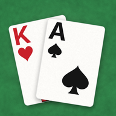

Vint
The partnership card game of old Russia, for iPhone and iPad.
About
Vint (Винт) is a trick-taking card game for four players in two partnerships, a cousin of bridge, whist and preferans. In the app you play with an AI partner against two AI opponents. Eight short lessons teach the game from the start, and the live score sheet explains every number.
Help
- How do I learn the rules? Open Learn to Play from the main menu. The lessons go from tricks and trumps to honours, coronets and the rubber.
- Why did I get these points? Open the score sheet and tap any entry. The app shows the cards and the rule behind it.
- Can I stop in the middle of a game? Yes. The app saves after every card. Choose Continue in the main menu.
- Can I change the language? Yes: Settings → Language. Vint speaks English, Español, Português, Français, Deutsch and Русский.
Contact
Found a bug, or have a question about the rules? Please open an issue and describe what happened. Tell us your device and the app version (shown at the bottom of Settings).
Privacy Policy · © 2026 Aleksei Khaliapin